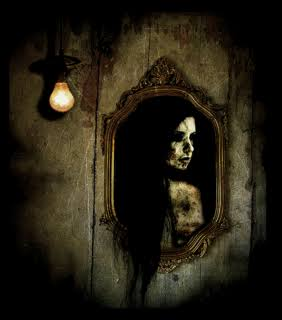
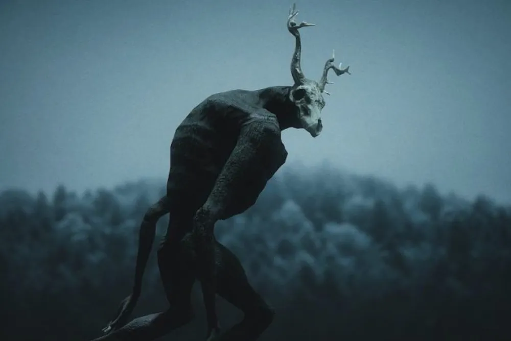
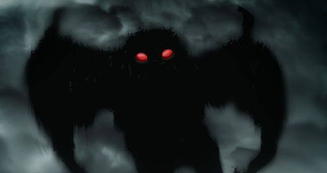

Urban Legends
Explore myths, whispered stories, mysterious creatures and chilling tales that have survived for generations.

Kuchisake-onna
A masked woman whose terrifying question has become Japan's most feared legend.
Read Story →


The Rake
A pale creature reported lurking in the darkness before mysterious disappearances.
Read Story →